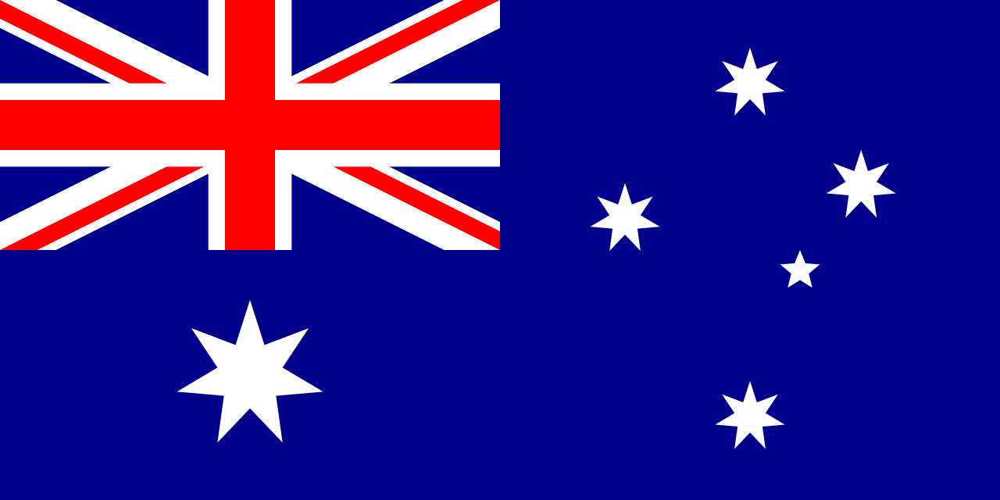

Великобританія — суверенна держава розташована на північному заході від Континентальної Європи, на Британських островах. Територія включає острів Велика Британія, північну частину острова Ірландія та численні невеликі острови. Нагору
Японія — острівна держава в Східній Азії. Розташована на Японському архіпелазі, межує з Японським морем на заході й Тихим океаном на сході, також простягається від Охотського моря на північному сході до Східнокитайського та Філіппінського морів на південному заході. Будучи частиною Тихоокеанського вогняного кола, Японія охоплює архіпелаг з 6 852 островів; п'ятьма основними островами, з півночі на південь є Хоккайдо, Хоншю, Шікоку, Кюшю та Окінава. Нагору
Швейцарія — держава, розташована на стику Західної, Центральної та Південної Європи.[7] Федеративна республіка, що складається з 26 кантонів, з федеральною владою у Берні. Нагору
США — конституційна федеративна республіка в Північній Америці, що складається з 50 штатів: Аляски, Гаваїв, 48 штатів на території між Атлантичним і Тихим океанами і між Канадою і Мексикою та федерального (столичного) округу Колумбія. Нагору
Австралія — незалежна федеративна держава, що знаходиться у Південній півкулі й повністю займає однойменний материк, прилеглий великий острів Тасманія на півдні й численні дрібні навколо, серед яких Норфолк і Лорд-Гав у Тихому океані, Кокосові острови в Індійському та інші. Нагору
Єгипет — трансконтинентальна держава, що охоплює північно-східний кут Африки та південно-західний кут Азії з'єднані сухопутним мостом, утвореним Синайським півостровом. Нагору